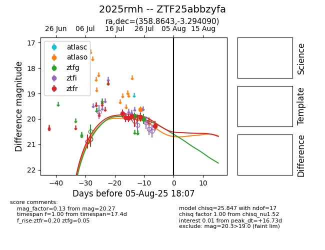

Target 2025rmh at 2025-08-05 18:07, see:
FINK: fink-portal.org/2025rmh
Lasair: lasair-ztf.lsst.ac.uk/objects/2025rmh
ALeRCE: alerce.online/object/2025rmh
TNS: wis-tns.org/object/2025rmh
YSE: ziggy.ucolick.org/yse/transient_detail/2025rmh
alt names
ZTF25abbzyfa (ztf,fink)
2025rmh (tns,yse)
coordinates:
equatorial (ra, dec) = (358.8643,-3.29409)
galactic (l, b) = (91.2091,-62.66592)
photometry
last atlaso=19.62, ztfg=19.99, ztfr=20.27
1 atlaso, 3 ztfg, 6 ztfr detections
